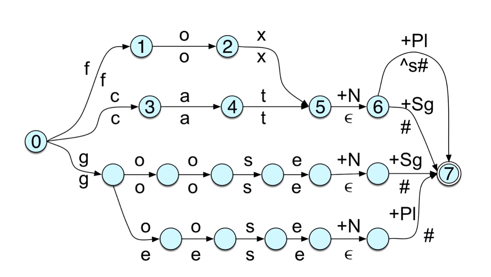
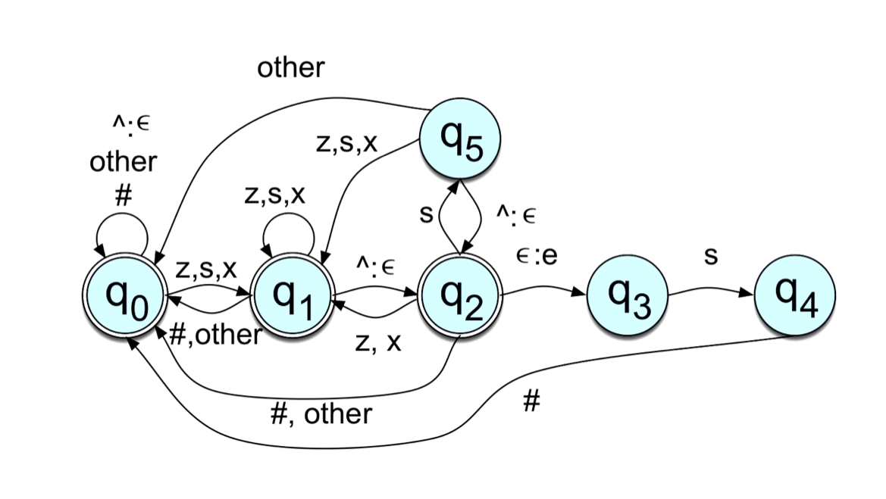

HW 3: More foul logic
WHAT TO SUBMIT:
- One file named hw3q1.pl for part 1 (see below).
- One file named hw3q2.pl for part 2 (see below).
(Both files should be prolog files.)
As in previous assignments, you can use
http://compling.ucdavis.edu/taufst/
to work on your solution.
PART 1: More-foul-logical spelling
Consider the FSTs (from Jurafsky & Martin) discussed in class and reproduced below. Together, these two FSTs show how one can perform morphological inflection to express number (singular and plural) in nouns using an approach called two-level morphology.
The first FST is the level where the input has the form WORD+N+Pl, or WORD+N+Sg, where WORD is a noun (fox, cat, goose), +N represents that it is a noun, +Pl denotes plural, and +Sg denotes singular. The output of this FST is an intermediate form used in two-level morphology: the original word with a morpheme (or no visible morpheme) concatenated to it, but using only the canonical forms of the morphemes (i.e. without observing spelling rules or phonological rules).

The second FST takes the intermediate form as input, and produces the spelling of the inflected word.

Examine the incomplete FST specification below, which corresponds to the second level FST above. Make sure you understand how the FST above is represented in the file. Notice that there are missing transitions! Your first task is to fill in the missing transitions, and save the complete FST in a file called hw3q1.pl. (You don't need to implement the first level FST, just the second level.)
TIP: You can copy and paste the incomplete specification below as a starting point. Notice that the ^ and # symbols appear as '^' and '#' (enclosed by single-quotes). Make sure to use the single-quotes with these symbols, but not with other symbols.
% Second-level FST from the two-level morphology example in
% Jurafsky & Martin
% Transitions out of state 0
transition(0, '#', 0, '#').
transition(0, '^', 0, eps).
% S below can be anything, except for '#', '^', z, s, x, eps.
% Pay close attention to how to interpret how J&M
% "other" and "#" in transitions.
% We use a variable S in the transition,
% and restrict its possible values by naming
% the symbols that S cannot be.
transition(0, S, 0, S) :-
S \= z,
S \= x,
S \= s,
S \= '#',
S \= '^',
S \= eps.
% These are straightforward transitions
transition(0, z, 1, z).
transition(0, s, 1, s).
transition(0, x, 1, x).
% Transitions out of state 1
transition(1, S, 0, S) :-
% FILL IN LINES HERE THAT RESTRICT WHAT S CAN BE
S \= eps.
% ADD THE OTHER TRANSITIONS OUT OF STATE 1
% Transitions out of state 2
% ADD YOUR TRANSITIONS HERE
% transitions out of state 3
transition(3, s, 4, s).
% transitions out of state 4
transition(4, '#', 0, '#').
% transitions out of state 5
% ADD YOUR TRANSITIONS HERE
initial(0).
% FILL IN FINAL STATES
WHAT TO TURN IN FOR PART 1:
Submit a file named hw3q1.pl, which contains the FST above with your additional transitions to match the figure of the second-level FST.
Your submission should produce appropriate output when given inputs such as:
f o x ^ s #
f o x #
c a t ^ s #
g o o s e #
And other similar strings that are not included in the first FST above, but follow the same format. This is not an exhaustive list, and your submission will not be evaluated on its ability to produce the correct output alone; your FST must match the picture above.
PART 2: More-foul-logical sounds
Consider now the allomorphs of the plural morpheme in English discussed in class: [z] (as in dogs), [s] (as in cats), [əz] (as in foxes). Let's represent them with the arpabet symbols Z, S and IH Z.
Create an FST that takes as input the pronunciation of a noun (represented using arpabet symbols as in the CMU pronunciation dictionary) concatenated with a representation of the plural morpheme and the end of word symbol # used by J&M, and outputs the pronunciation of the plural form of the noun, followed by the symbol #.
For example, given the input:
d aa g ^ s #
(which corresponds to the word dog, the arbitrary symbol ^, the plural morpheme s, and the end of word symbol #) will produce as output
d aa g z #
(which is the pronunciation of the plural form dogs).
Other examples:
Input (cat+s)
k ae t ^ s #
Output (cats)
k ae t s #
Input (flash+s)
f l ae sh ^ s #
Output (flashes)
f l ae sh ih z #
As a starting point, you can use the following:
% Just a sample transition. You can use it or delete it.
transition(1, S, 1, S) :-
S \= eps,
S \= '^'.
% ENTER ADDITIONAL TRANSITIONS HERE
% Adjust your initial and final states if needed.
initial(1).
final(1).
% Potentially useful features
voiced(aa).
voiced(ae).
voiced(ah).
voiced(ao).
voiced(aw).
voiced(ay).
voiced(b).
% Fill in more.
% Look at the list of arpabet symbols in
% the cmu dictionary, and add the rest of
% the voiced symbols here.
voiced(zh).
sibilant(ch).
sibilant(s).
sibilant(sh).
sibilant(jh).
sibilant(z).
sibilant(zh).
% Once we have listed the sibilants,
% we can define what a nonsibilant is.
% Here we can assume that the alphabet
% is the symbols in the arpabet, ^ and #.
% In summary, the following says that a
% symbols S corresponds to a nonsibilant
% if S is not '^', S is not '#', S is not
% epsilon, and S is not a sibilant. To
% say that S is not a sibilant, here we
% are using the "not" operator \+ just to
% show how this can be done. Another easy
% way to define the nonsibilants would be
% just to list them all, instead of
% saying what they are not.
nonsibilant(S) :-
S \= eps,
S \= '^',
S \= '#',
\+ sibilant(S).
TIP: Notice that the ^ and # symbols appear as '^' and '#' (enclosed by single-quotes). Make sure to use the single-quotes with these symbols, but not with arpabet symbols.
The way we define the nonsibiliants above is an illustration of how to use the "not" operator \+ (makes something true become false, or something false become true). So, if S is sibiliant, sibilant(S) is true, and \+ sibiliant(S) is false. If S is not sibilant, sibilant(S) is false, and \+ sibilant(S) is true. It is not required or necessary to use \+ in the assignment. The same idea could be implemented easily just by listing all the relevant symbols.
WHAT TO TURN IN FOR PART 2:
Submit a file named hw3q2.pl, containing your FST as prolog statements.
FAQ
Q: Due to specific circumstances I will not be able to finish the assignment by the due date. Can I have an extension?
A: Yes, three-day extensions requested by 24h before the submission deadline will be granted.